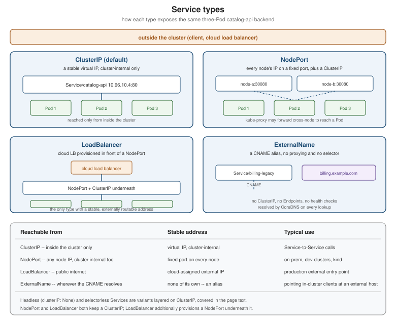

Services
|
This content was generated with the assistance of AI and should be verified against the official documentation before being relied on in production. |
A Pod’s IP address is not something anything else should ever depend on: it is assigned when the Pod starts, and a
Deployment rolling update, a reschedule after a node
failure, or a simple kubectl delete pod replaces it with a Pod at a different address. Services are the object
that gives a set of Pods a single, stable way to be reached despite that constant churn — a fixed virtual IP and DNS
name in front of a label selector, load-balanced across whichever Pods currently match it. This page describes
Services as they stand in Kubernetes 1.37 with kube-proxy 1.37; every Bookshelf manifest below targets the core
v1 API, which is where Service has lived, unchanged in shape, since Kubernetes 1.0.
Why Services exist
Rensin’s Kubernetes: Scheduling the Future at Cloud Scale (2015), ch. 3, "Organize, Grow, and Go", already frames the problem this way: a client — another Pod, or a person outside the cluster — needs a stable address to talk to "the catalog API", not to any one of its interchangeable replicas, and that address has to keep working as individual Pods are replaced, rescheduled or scaled. A Service solves this with three cooperating pieces:
-
a label selector (
spec.selector), matched the same way a ReplicaSet’s selector is, against every Pod’s labels in the Service’s namespace; -
a stable virtual IP (the
ClusterIP) and DNS name, covered further in DNS and Service Discovery, that never changes for the life of the Service object, regardless of which Pods are currently behind it; -
an up-to-date list of the matching Pods' addresses, computed continuously by the EndpointSlice controller (below) and consumed by kube-proxy to actually load-balance traffic to one of them.
Book 1’s "client request path" — DNS lookup, then a load balancer, then the Service, then a Pod — is still exactly
the shape of an external request today; only the components behind each arrow changed, most visibly the frontend
load balancer, discussed in The portal IP, CreateExternalLoadBalancer, and the userspace proxy, as history below.
The four `type`s: ClusterIP, NodePort, LoadBalancer, ExternalName
spec.type selects how a Service is reachable. All four keep the same selector-driven Endpoints/EndpointSlices
machinery underneath except ExternalName, which is a special case with no selector, no proxying and no Endpoints
at all.
type |
What it does | Reachable from |
|---|---|---|
|
Allocates a stable virtual IP from the cluster’s Service CIDR (see Cluster Networking, CNI and Service Mesh) that load-balances across every matching Pod. |
Inside the cluster only. |
|
Everything |
Any node’s IP, from inside or outside the cluster — still cluster-internal in the sense that no cloud infrastructure is provisioned. |
|
Everything |
The public network the cloud load balancer is attached to. The only type with an externally routable, provider-managed address on its own. |
|
No selector, no ClusterIP, no Endpoints. |
Wherever the CNAME target itself is reachable from — the Service adds no connectivity of its own, only a name that in-cluster clients can look up without hard-coding an external hostname. |

apiVersion: v1
kind: Service
metadata:
name: catalog-api
namespace: bookshelf
spec:
type: ClusterIP
selector:
app.kubernetes.io/name: catalog-api
ports:
- port: 80
targetPort: 8080Source: Kubernetes Docs — Service.
ExternalName is worth dwelling on because it looks like the odd one out but is in fact the simplest of the four — a pure DNS alias, evaluated fresh on every lookup, with no IP of its own and no health checking:
apiVersion: v1
kind: Service
metadata:
name: billing-legacy
namespace: bookshelf
spec:
type: ExternalName
externalName: billing.example.comHeadless Services
Setting spec.clusterIP: None on an otherwise ordinary Service turns off virtual-IP load-balancing entirely: CoreDNS
resolves the Service’s name to the individual Pod IPs directly (an A/AAAA record per ready Pod) instead of to one
proxied address, and, when the Service is also referenced by a
StatefulSet's spec.serviceName, one additional per-Pod DNS record is
created for each ordinal. A client that needs to reach every backend, or one specific backend, rather than "any
one of them picked for me", uses this instead of a load-balanced ClusterIP —
StatefulSets is the worked example with a full manifest and diagram.
apiVersion: v1
kind: Service
metadata:
name: catalog-api-headless
namespace: bookshelf
spec:
clusterIP: None
selector:
app.kubernetes.io/name: catalog-api
ports:
- port: 80
targetPort: 8080Selectorless Services, manual EndpointSlices, and per-namespace resolution
Dropping spec.selector entirely produces a Service that the EndpointSlice controller does not manage at all — nothing populates its endpoints automatically, because there is no selector to match Pods against. Hightower, Burns
& Beda’s Kubernetes: Up and Running (1st ed., 2017 sampler), ch. 4 (book ch. 13), "Integrating Storage Solutions
and Kubernetes", builds exactly this to import an external service into the cluster’s own naming: a legacy
database, or a service still running outside Kubernetes, gets a Service name and DNS entry that in-cluster code can
call like any other backend, with the actual address supplied by hand instead of by a label selector. The book wires
this with the old, now-deprecated Endpoints object (ExternalName did not yet exist in every case it needed, and
EndpointSlice did not exist at all); the current way to do the same thing is a selectorless Service paired with a
manually created EndpointSlice:
apiVersion: v1
kind: Service
metadata:
name: legacy-inventory
namespace: bookshelf
spec:
ports:
- port: 5432
targetPort: 5432
# no selector: nothing populates Endpoints/EndpointSlices for this Service automatically
---
apiVersion: discovery.k8s.io/v1
kind: EndpointSlice
metadata:
name: legacy-inventory-manual
namespace: bookshelf
labels:
kubernetes.io/service-name: legacy-inventory # binds this slice to the Service above
addressType: IPv4
ports:
- name: ""
protocol: TCP
port: 5432
endpoints:
- addresses:
- "203.0.113.42" # the legacy database's real, out-of-cluster addressSource: Kubernetes Docs — Service — Services Without Selectors and Kubernetes Docs — EndpointSlices.
The same chapter also uses a selectorless Service (there, an ExternalName one) for per-namespace resolution: a
bookshelf-test namespace and a bookshelf-prod namespace each define a Service named identically
(legacy-inventory) but pointing at their own environment’s backend — test at a sandbox database, prod at the real
one. In-cluster code that simply calls legacy-inventory (or, with the fully qualified name,
legacy-inventory.<namespace>.svc.cluster.local, see
DNS and Service Discovery) then gets test/prod parity for
free: the exact same manifest and the exact same client code run unmodified in either namespace, because the
difference lives entirely in which namespace’s Service object is doing the resolving, not in any code path. This is
also the pattern the book uses for a Service that has no health checks of its own to run against an external
backend — the cluster trusts whatever address it is given, with no readiness or liveness probing on Kubernetes' side
(see Health Probes and Container Lifecycle for the probing
Kubernetes does run, which never applies to a manually populated EndpointSlice).
The deprecated Endpoints API
Every Service, selector-based or manual, used to be backed by exactly one Endpoints object (kind: Endpoints,
core v1) holding a flat list of every matching address and port — the object the book’s ch. 4 manifests target
directly. That single-object design does not scale: a Service behind thousands of Pods produced one enormous
Endpoints object that every kube-proxy on every node had to re-read in full on each change.
EndpointSlices (discovery.k8s.io/v1, stable since Kubernetes 1.21) replace it with several smaller, bounded
objects per Service (up to 100 endpoints each by default, configurable via the endpoint-controller’s
--max-endpoints-per-slice flag), each carrying an addressType, its own ports and per-endpoint conditions
(ready, serving, terminating) and topology fields (zone, nodeName) that a flat Endpoints object has no
room for — exactly what externalTrafficPolicy and internalTrafficPolicy and topology-aware routing below need. The Kubernetes project
deprecated the Endpoints API in 1.33: the API is still served for compatibility (nothing in a 1.37 cluster removes
it), the control plane keeps writing a mirrored Endpoints object for every Service so old clients keep working, but
new code — and the manual manifest above — should read and write EndpointSlice directly.
kubectl get endpointslices -n bookshelf -l kubernetes.io/service-name=catalog-api
kubectl describe endpointslice -n bookshelf catalog-api-abc12Source: Kubernetes Docs — EndpointSlices.
Multi-port and named ports, and sessionAffinity
A Service’s spec.ports is a list, not a single value: one Service can expose several ports at once (an HTTP port
and a separate metrics port, say), each entry independently mapping its own port to a targetPort on the Pod.
Once a Service (or a Pod) has more than one port, every port/targetPort needs a distinct name, because that
name — not a bare number — is what a multi-port Pod spec and things like a
an Ingress backend reference unambiguously.
apiVersion: v1
kind: Service
metadata:
name: catalog-api
namespace: bookshelf
spec:
selector:
app.kubernetes.io/name: catalog-api
ports:
- name: http
port: 80
targetPort: http # matches a named containerPort on the Pod
- name: metrics
port: 9090
targetPort: metrics
sessionAffinity: ClientIP
sessionAffinityConfig:
clientIP:
timeoutSeconds: 10800 # 3 hours, the defaultsessionAffinity controls whether repeated requests from the same client are routed to the same Pod whenever
possible. The default, None, load-balances every request independently (round-robin-ish, depending on the
kube-proxy mode below); ClientIP instead pins a client’s source IP to whichever Pod it was first routed to, for
sessionAffinityConfig.clientIP.timeoutSeconds (default three hours) since its last request. This is a coarse tool — it affinities by IP, not by an application-level session token, so it groups every client behind the same NAT
gateway together — and it has nothing to do with externalTrafficPolicy below, which is about which node handles
a packet, not which Pod a repeat client lands on.
externalTrafficPolicy and internalTrafficPolicy
By default, any node that receives traffic for a NodePort or LoadBalancer Service may forward it to any
matching Pod cluster-wide, even one on a different node — convenient, but it means the packet’s original source IP
is usually replaced by the forwarding node’s IP by the time it reaches the Pod (SNAT), and it costs an extra network
hop whenever the chosen Pod is not local. spec.externalTrafficPolicy: Local changes that for externally-arriving
traffic: a node only forwards to Pods running on itself, dropping the packet if it has none, in exchange for the
client’s real source IP being preserved end to end and one fewer network hop. spec.internalTrafficPolicy: Local
is the same hard rule applied to traffic that originates inside the cluster (a Pod calling the Service’s
ClusterIP): kube-proxy only routes to a Pod on the caller’s own node and drops the traffic when that node has
none — there is no cluster-wide fallback. It suits a node-local agent that runs on every node (a DaemonSet); for a
soft same-node preference that does fall back, use trafficDistribution: PreferSameNode (below) instead. Both default to Cluster (the
original, no-locality behaviour); both are read straight off EndpointSlice conditions and nodeName, which is
exactly what the flat Endpoints API could not represent per-endpoint.
apiVersion: v1
kind: Service
metadata:
name: catalog-api
namespace: bookshelf
spec:
type: LoadBalancer
externalTrafficPolicy: Local # preserve the client's source IP, avoid an extra hop
internalTrafficPolicy: Local # in-cluster callers ONLY reach a same-node Pod; traffic is dropped on a node
# without a catalog-api Pod -- see trafficDistribution below for a soft preference
selector:
app.kubernetes.io/name: catalog-api
ports:
- port: 80
targetPort: 8080trafficDistribution: topology-aware routing
spec.trafficDistribution expresses a preference for keeping traffic close, without externalTrafficPolicy: Local’s
hard "same node or drop it" rule: `PreferSameZone prefers an endpoint in the client’s own zone and falls back to
any healthy endpoint cluster-wide if none is available there; PreferSameNode prefers an endpoint on the client’s
own node first, then falls back to same-zone, then cluster-wide. (PreferClose is a deprecated alias for
PreferSameZone.) The field went GA in Kubernetes 1.33 and the PreferSameZone/PreferSameNode values in 1.35.
It is the simpler, more predictable successor of Topology Aware Routing, the
service.kubernetes.io/topology-mode: Auto annotation (which replaced the older
service.kubernetes.io/topology-aware-hints). When that annotation is set to Auto it takes precedence over
trafficDistribution, and a traffic policy set to Local takes precedence for its traffic type as well. The
annotation’s heuristic spreads traffic across zones by allocatable CPU and falls back cluster-wide unless there are
enough endpoints (at least three per zone); trafficDistribution has no such safeguard — if a zone has any
endpoint, it receives all of that zone’s traffic, so keeping each zone’s endpoints from being overloaded is up to
you.
apiVersion: v1
kind: Service
metadata:
name: catalog-api
namespace: bookshelf
spec:
selector:
app.kubernetes.io/name: catalog-api
trafficDistribution: PreferSameZone # keep traffic in-zone when a healthy in-zone Pod exists
ports:
- port: 80
targetPort: 8080kube-proxy modes: nftables, iptables, and IPVS
kube-proxy is the node-local component that actually programs the packet-forwarding rules an EndpointSlice’s list of addresses describes, in one of three modes:
| Mode | Status in Kubernetes 1.37 |
|---|---|
|
The recommended mode for new Linux clusters, stable since 1.33, built on the kernel’s modern |
|
The long-standing default. Still fully supported, but superseded by |
|
Deprecated in Kubernetes 1.35. The Linux kernel’s IPVS API turned out to be a poor fit for everything the
Service API needs to express, and the IPVS backend could never correctly implement every edge case the
|
externalIPs: deprecated in Kubernetes 1.36
spec.externalIPs lets a Service claim to be reachable on one or more IPs that kube-proxy simply assumes are
already routed to a node, with no cloud integration and no ownership check of any kind — exactly the gap
CVE-2020-8554 exploited, since any user allowed to create a Service could claim an IP address that was never
theirs to claim and intercept traffic meant for it. The field has been formally deprecated since Kubernetes 1.36
(the project already recommended disabling it, via the DenyServiceExternalIPs admission controller, since 1.21),
with removal planned for 1.43; type: LoadBalancer, NodePort, or the Gateway API
(Gateway API) are the supported replacements for whatever externalIPs was
being used for.
kubectl expose
kubectl expose creates a Service from an already-running Deployment, ReplicaSet, Pod or (with --protocol)
another Service, inferring the selector from the target’s own labels instead of it being typed out by hand — the
quick path from "I have a running Deployment" to "it has a Service in front of it", and the one Hightower, Burns &
Beda’s ch. 5 (book ch. 14) uses throughout to put a Service in front of each app it deploys.
kubectl expose deployment catalog-api -n bookshelf \
--port=80 --target-port=8080 --name=catalog-apiservice/catalog-api exposedSource: Kubernetes Docs — kubectl expose and Kubernetes Docs — Connecting Applications with Services.
The portal IP, CreateExternalLoadBalancer, and the userspace proxy, as history
Rensin’s ch. 3 describes exposing a Service through a hand-run firewall rule, a DIY HAProxy, or a cloud load
balancer — all built by the operator, outside Kubernetes' own API — because at the time neither NodePort nor
type: LoadBalancer existed yet: the field the book’s era called the "portal IP" is exactly today’s ClusterIP
under an earlier name, and CreateExternalLoadBalancer: true was the pre-1.0 predecessor of today’s
spec.type: LoadBalancer, which replaced it once cloud-provider integration moved into the Service API itself.
kube-proxy’s own implementation has moved twice since: the original userspace proxy mode actually terminated every
connection in a kube-proxy process and re-dialed a backend Pod itself (a real, user-space round-robin, and the
literal origin of "the userspace proxy" Book 1 alludes to), which iptables mode replaced with kernel-level packet
rewriting and no per-connection userspace hop; iptables mode has itself now been overtaken by nftables as the
recommended mode above. None of these three legacy pieces — portal IP, CreateExternalLoadBalancer, or the
userspace proxy — exist in a 1.37 API server or kube-proxy binary; every Bookshelf Service in this section is
written, and works, purely against type: ClusterIP / NodePort / LoadBalancer / ExternalName.
kube-proxy programming a node from EndpointSlices
Every node’s kube-proxy watches the same EndpointSlice objects independently and programs its own local rules from
them; externalTrafficPolicy, internalTrafficPolicy and trafficDistribution are all just filters kube-proxy
applies to that same watched list before writing rules — which is why they need no per-node configuration of their
own, only the Service’s spec. Source:
Kubernetes Docs — EndpointSlices and
Kubernetes Docs — Virtual IPs and Service Proxies.
References
-
Kubernetes Blog — Kubernetes v1.36: Deprecation and Removal of Service ExternalIPs
-
Rensin, D. (2015). Kubernetes: Scheduling the Future at Cloud Scale. O’Reilly. Ch. 3, "Organize, Grow, and Go".
-
Hightower, K., Burns, B., Beda, J. (2017). Kubernetes: Up and Running (1st ed. sampler). O’Reilly. Ch. 4 (book ch. 13), "Integrating Storage Solutions and Kubernetes", and ch. 5 (book ch. 14), "Deploying Real-World Applications".